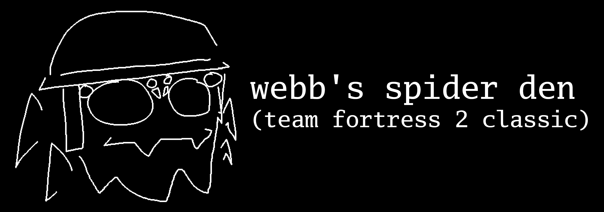

discord server: https://discord.gg/3Dg9t7Qq7j - restarts every day at
05:30 EST
ANYONE UNDER THE AGE OF EIGHTEEN WHO DOESN'T LEAVE WILL BE
PERMABANNED ON SIGHT
WITH NO APPEAL
rules and guidelines
be kind
-
Try to respect people’s boundaries, even if violating them wouldn’t
otherwise break the rules
- Don't talk shit about other communities
- Do not call others unwanted slurs and/or misgendering terms
do not post sexual content outside of sensitive chat (!sensitive)
-
Never engage sexually with others (i.e. erotic roleplaying,
oversharing, etc) because this is a game server, not Chaturbate
- Inversely, don’t post safe content inside of sensitive chat
-
Don’t pressure people into using sensitive chat if they don’t want
to
-
Sprays cannot be lewder than what's in-game (i.e. the calendar
girls) as there's currently no way to opt out of it.
keep chat clean
- Don’t spam
- Use ALL CAPS sparingly
- Advertising is not allowed unless explicitly allowed by me
don’t be a bigot
-
If you’re a Nazi punk,
fuck off
- Non-reclaiming slurs are not allowed, period
-
Irony poisioning is bad for your soul, and for the server, so poison
yourself elsewhere
the obvious
- Don’t be a danger to yourself or others
- Don’t grief
-
No hacking or exploiting for nefarious purposes (i.e. unfair
advantages, crashing people’s games, etc)
keep things civil
-
Do not discuss politics or touchy subjects unless a staff member
grants permission to do so
- Do not encourage arguments/flaming
- Don’t engage with flamers or rule-breakers
1984
-
As benevolent dictator for life, other admins and I reserve the
right to make decisions even if the guidelines don’t cover it or
there’s a contradiction
-
If you disagree with a decision, we’d encourage you to
constructively talk with a staff member or email
1984 at spiderden dot org to submit an appeal
-
We have a suggestions channel where you can discuss things you don’t
like